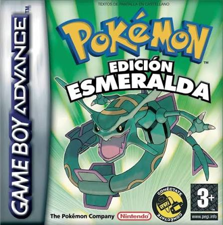

01
Pokémon Esmeralda
Es mi juego favorito de la saga, ademas de su historia, su region y todo el contenido de la tercera generacion. Es mi favorito por que fue el primer juego de pokemon que jugue y pase.